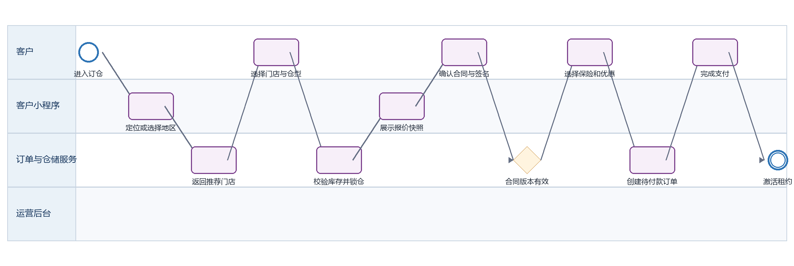
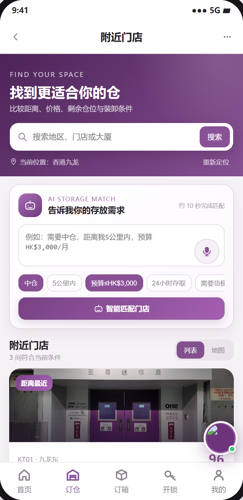
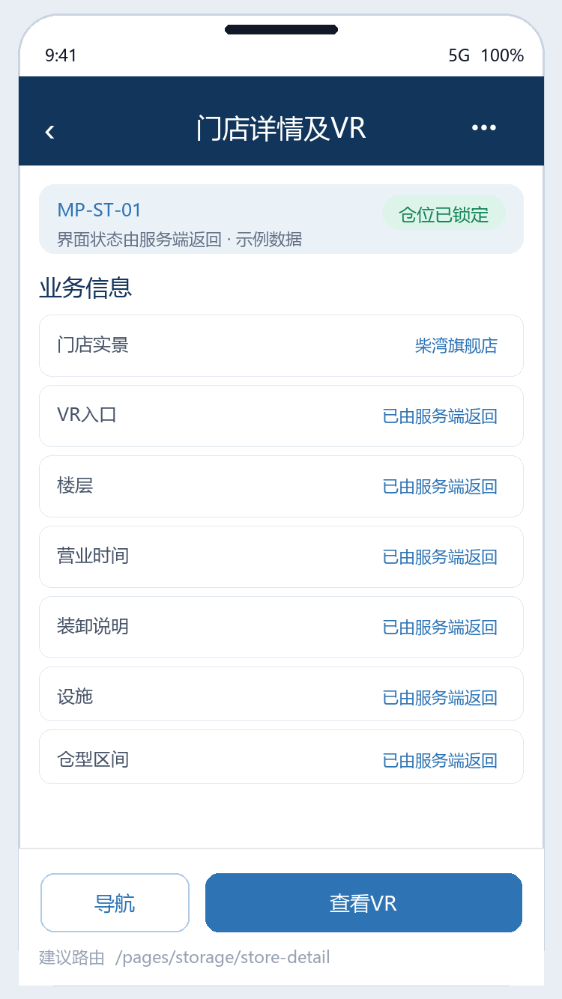
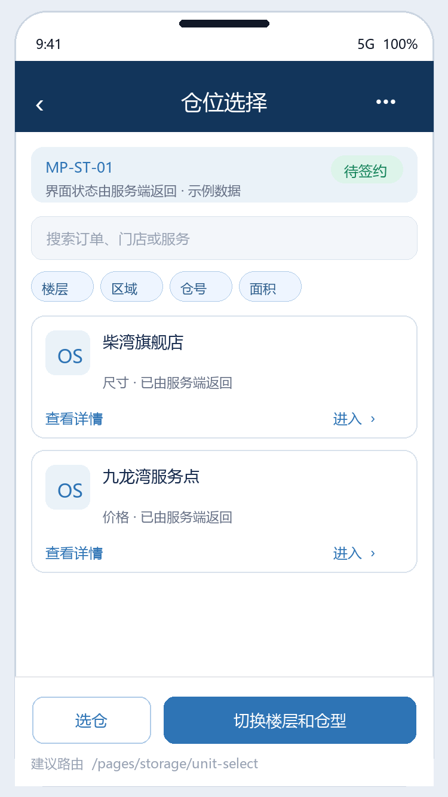
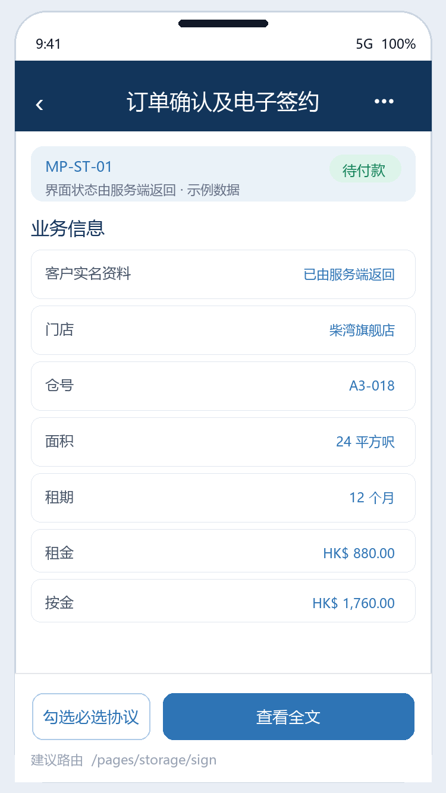
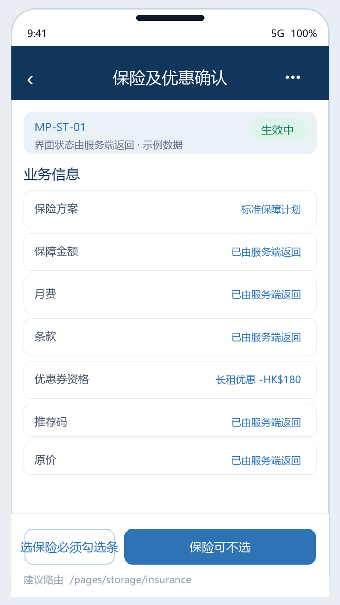
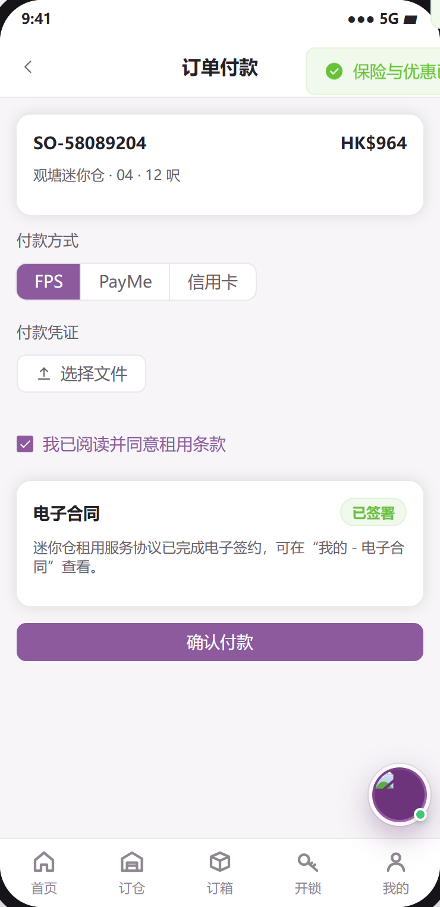

迷你仓选仓下单 PRD
下载 Word 文档迷你仓选仓下单 PRD
客户小程序研发详细需求规格 · V2.0 · 2026-09-08
定义客户从首页进入订仓、选择门店与仓位、锁定报价、电子签约、确认保险与优惠、完成付款，直至租约生效的完整研发规格。
| 属性 | 内容 |
|---|---|
| 文档编号 | MP-ST-01 |
| 适用端 | 客户小程序、运营后台、工单小程序及领域服务 |
| 范围 | 门店推荐与搜索、列表和地图、门店详情与VR、仓位筛选、库存锁定、报价快照、合同签署、保险与优惠、订单创建、支付结果、租约激活。 |
| 不在本模块范围 | 门店及仓位主数据维护、价格审批、线下交仓、支付渠道清算；这些能力由后台或第三方服务提供。 |
1 目标与边界
1.1 本期范围
门店推荐与搜索、列表和地图、门店详情与VR、仓位筛选、库存锁定、报价快照、合同签署、保险与优惠、订单创建、支付结果、租约激活。
1.2 不在本模块范围
门店及仓位主数据维护、价格审批、线下交仓、支付渠道清算；这些能力由后台或第三方服务提供。
1.3 角色与系统责任
| 角色或系统 | 职责 |
|---|---|
| 客户 | 浏览、选择、签约、付款、提交申请、查询进度 |
| 客户小程序 | 采集意图并展示服务端状态，不自行决定价格、库存、资格或审批结果 |
| 运营后台 | 维护主数据、价格、库存、可操作项、审批、异常处理和人工改派 |
| 工单小程序 | 承接送取、验收、搬仓、清仓等线下任务，回传节点、附件和异常 |
| 领域服务 | 保存订单、租约、箱体、预约、支付与合同的权威状态并发布事件 |
2 BPMN 业务流程

圆形表示开始或结束事件，圆角矩形表示任务，菱形表示服务端判断。
跨端节点必须先写入领域服务，再由事件刷新客户侧时间线。
3 状态机与准入
| 状态码 | 客户文案 | 进入条件 | 下一步 |
|---|---|---|---|
| BROWSING | 浏览中 | 尚未锁定仓位 | 选择仓位 |
| HELD | 仓位已锁定 | 仓位锁定凭证 有效，默认10分钟 | 确认报价或超时释放 |
| 待签约 | 待签约 | 报价已冻结 | 签署成功或合同版本冲突 |
| 待付款 | 待付款 | 合同已签署，支付单已创建 | 支付成功、失败或超时关闭 |
| 生效中 | 生效中 | 渠道回调成功，等待租约与门禁同步 | 租约激活或进入补偿 |
| 生效中 | 租用中 | 租约、仓位占用和门禁权限一致 | 进入租中服务 |
| 已失效 | 已失效 | 锁仓或订单付款时限到期 | 释放仓位，可重新下单 |
| 已取消 | 已取消 | 客户取消或后台关闭 | 终态 |
状态码是跨端契约，中文文案不得作为业务判断条件；写操作必须携带聚合版本并处理409冲突。
4 页面与交互
本节截图直接取自迷你仓小程序可交互原型的实际页面，不使用根据字段自行生成的示例图；业务权威值仍以服务端返回为准。
4.1 门店推荐列表与地图
| 属性 | 要求 |
|---|---|
| 建议路由 | /pages/storage/index |
| 入口 | 首页订仓、底部订仓、订单再次租用 |
| 页面字段 | 定位授权、手动地区、搜索词、快捷条件、门店编码/名称/地址/距离/营业时间/起租价/可租数量/设施/推荐分/推荐理由 |
| 主要操作 | 搜索、切换列表地图、筛选、对比最多3家、进入详情；定位失败须保留手动地区和列表模式 |
| 通用状态 | 骨架屏、空态、无网络、超时、无权限、数据已变化、提交中、提交成功和提交失败分别实现 |

4.2 门店详情与VR
| 属性 | 要求 |
|---|---|
| 建议路由 | /pages/storage/store-detail |
| 入口 | 门店卡片 |
| 页面字段 | 门店实景、VR入口、楼层、营业时间、装卸说明、设施、仓型区间、实时余量、营销标签、交通路线 |
| 主要操作 | 查看VR、导航、电话咨询、预约看仓、开始选仓；无库存时禁用选仓但保留咨询 |
| 通用状态 | 骨架屏、空态、无网络、超时、无权限、数据已变化、提交中、提交成功和提交失败分别实现 |

4.3 仓位选择
| 属性 | 要求 |
|---|---|
| 建议路由 | /pages/storage/单位-select |
| 入口 | 门店详情 |
| 页面字段 | 楼层、区域、仓号、面积、尺寸、价格、可租状态、起租日、租期、预计到期日、优惠提示、锁定倒计时 |
| 主要操作 | 切换楼层和仓型、选仓、刷新报价、锁仓；状态必须同时使用文字和颜色表达 |
| 通用状态 | 骨架屏、空态、无网络、超时、无权限、数据已变化、提交中、提交成功和提交失败分别实现 |

4.4 订单确认与电子签约
| 属性 | 要求 |
|---|---|
| 建议路由 | /pages/storage/sign |
| 入口 | 锁仓成功 |
| 页面字段 | 客户实名资料、门店/仓号/面积、租期、租金、按金、服务费、合同版本、必选协议、可选授权、签名、报价有效期 |
| 主要操作 | 查看全文、勾选必选协议、横屏签名、提交签署；合同版本变化返回409并要求重读 |
| 通用状态 | 骨架屏、空态、无网络、超时、无权限、数据已变化、提交中、提交成功和提交失败分别实现 |

4.5 保险与优惠确认
| 属性 | 要求 |
|---|---|
| 建议路由 | /pages/storage/insurance |
| 入口 | 签约完成 |
| 页面字段 | 保险方案、保障金额、月费、条款、优惠券资格、推荐码、原价、优惠、首期应付 |
| 主要操作 | 保险可不选；选保险必须勾选条款；优惠券与推荐码互斥；金额只展示服务端结果 |
| 通用状态 | 骨架屏、空态、无网络、超时、无权限、数据已变化、提交中、提交成功和提交失败分别实现 |

4.6 统一支付与结果
| 属性 | 要求 |
|---|---|
| 建议路由 | /pages/pay/index |
| 入口 | 订单创建成功 |
| 页面字段 | 订单号、支付单号、应付金额、币种、支付方式、支付状态、渠道流水、付款时间 |
| 主要操作 | 支付、3DS、轮询、失败重试、返回订单；不得以前端成功页直接修改订单 |
| 通用状态 | 骨架屏、空态、无网络、超时、无权限、数据已变化、提交中、提交成功和提交失败分别实现 |

5 业务规则
登录前允许浏览；首次锁仓、签约、支付要求登录，登录成功后恢复原页面及已选条件。
库存锁定必须由服务端原子执行。同一仓位同一时段只能存在一个有效 仓位锁定凭证；默认10分钟，可后台配置。
报价必须生成 报价编号、数据版本、失效时间 与金额明细；仓位、起租日、租期或优惠变化必须重新报价。
客户端不得计算最终金额。所有金额使用 最小货币单位金额 与 currency=HKD；页面同时显示租金、按金、保险、服务费、优惠和应付。
必选合同签署成功后才允许创建支付意图；签名记录保存 签署人编号、签署时间、模板版本、授权确认编号集合、签名摘要 和 文件摘要。
优惠券和推荐码互斥；切换时明确提示并二次请求营销试算。优惠只在付款成功后核销，失败或关闭不得消耗。
支付成功以服务端 webhook 为准。客户端轮询超时进入‘结果确认中’，不得再次创建同订单支付单。
激活租约须同时成功写入租约、仓位占用与门禁授权；部分失败进入补偿队列并生成后台异常任务。
6 接口契约
| 方法 | 接口 | 用途 | 幂等要求 |
|---|---|---|---|
| GET | /miniapp/stores | 按位置、区域、筛选条件查询门店 | 否 |
| GET | /miniapp/stores/{storeId}/units | 查询仓位与实时可租状态 | 否 |
| POST | /storage/holds | 原子锁定仓位并返回 holdToken | 是，Idempotency-Key |
| POST | /pricing/storage/quote | 生成版本化报价 | 是，requestId |
| POST | /contracts/{orderDraftId}/sign | 提交同意项与签名摘要 | 是，signatureRequestId |
| POST | /orders/storage | 基于 holdToken 与 quoteId 创建订单 | 是，clientRequestId |
| POST | /payments/intents | 创建支付意图 | 是，orderId+attemptNo |
| GET | /orders/{orderId}/payment-result | 查询服务端确认结果 | 否 |
通用响应包含code、message、data、traceId和serverTime。
金额使用整数最小货币单位；写接口校验登录身份、资源归属、幂等键和聚合版本。
错误码区分参数、资格、并发、锁定、支付确认、权限和服务不可用。
7 跨端交互和数据一致性
| 方向 | 规则 |
|---|---|
| 小程序到后台 | 只调用BFF或领域服务；后台通过同一业务编号处理。 |
| 后台到小程序 | 后台写领域状态并发布事件，小程序刷新权威状态。 |
| 后台到工单小程序 | 线下任务携带工单编号、订单编号、SLA和附件要求。 |
| 工单到客户小程序 | 扫码、附件和异常先回传领域服务，再生成客户可见时间线。 |
| 消息通知 | 只携带业务编号与深链，不下发敏感合同或门禁凭证。 |
7.1 领域事件
迷你仓仓位锁定事件.created
迷你仓仓位锁定事件.expired
合同已签署事件
订单已创建事件
付款已确认事件
租约已生效事件
租约生效失败事件
8 异常与恢复
| 场景 | 识别条件 | 客户侧与后台处理 |
|---|---|---|
| 仓位被抢占 | 锁仓返回409 仓位不可用 | 保留筛选条件，刷新同类可租仓位，不创建订单 |
| 锁仓超时 | 倒计时结束或服务端410 | 释放本地选择，提示重新锁仓和重新报价 |
| 价格发生变化 | quote 数据版本不一致 | 展示新旧金额差异并要求再次确认 |
| 支付结果未知 | 客户端超时/断网 | 展示确认中并轮询；后台可按支付单号人工核对 |
| 租约激活失败 | 支付已成功但门禁或仓位同步失败 | 订单显示生效处理中，生成高优先级后台异常任务，不重复扣款 |
9 非功能与安全
列表首屏P95不超过2秒，详情P95不超过1.5秒；长流程返回受理结果和异步进度。
敏感字段最小化展示，日志脱敏，下载资产使用短时签名URL。
所有状态变更记录前后值、操作者、来源端、原因码、时间和链路追踪编号。
支持简体中文、繁体中文、英文；日期、货币和地址按香港业务规范展示。
10 埋点与指标
| 事件 | 触发 | 关键属性 |
|---|---|---|
| 页面浏览 | 进入页面 | 页面标识、来源、订单编号、业务类型 |
| 点击操作 | 点击主要操作 | 操作类型、状态类型、订单版本 |
| 提交结果 | 写操作完成 | 请求编号、处理结果、错误类型、耗时毫秒数、链路追踪编号 |
| 流程节点变化 | 业务节点变化 | 变更前状态、变更后状态、事件编号、操作方类型 |
11 验收标准
AC-01 给定未登录客户已选仓位，当完成登录时，系统恢复原门店、仓位、起租日与租期，并重新校验 仓位锁定凭证。
AC-02 给定两个客户并发锁定同一仓位，当请求到达服务端时，只允许一个成功，另一个收到可恢复的409提示。
AC-03 给定合同版本在签署前更新，当客户提交旧版本时，系统拒绝签署并要求重新阅读。
AC-04 给定支付 webhook 重复投递，当处理相同事件时，只激活一次租约且只核销一次优惠。
AC-05 给定支付成功但门禁失败，当客户查看订单时，显示生效处理中且后台存在可追踪异常任务。
12 研发交付清单
| 角色 | 交付物 |
|---|---|
| 产品与设计 | 页面状态稿、字段字典、三语文案和验收用例 |
| 小程序前端 | 页面、组件、登录恢复、状态处理、埋点和错误恢复 |
| 后端 | OpenAPI、状态机、幂等、权限、事件、补偿和审计 |
| 运营后台 | 配置、审批、异常处理、重试和人工兜底 |
| 工单小程序 | 任务、扫码、附件、节点回传和异常上报 |
| 测试 | 端到端、并发、权限、弱网、重复事件和补偿验证 |